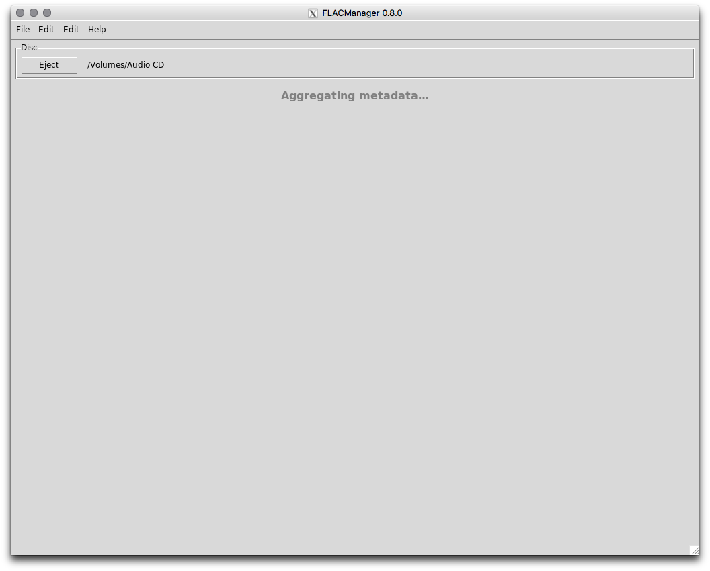

Using FLAC Manager¶
| Release: | 0.7.2 |
|---|
Configuring FLAC Manager¶
FLAC Manager depends on a configuration file, flacmanager.ini, which resides alongside the flacmanager.py script in the file system.
Note
If flacmanager.ini does not exist when FLAC Manager is run (e.g. on the first run), it will be created with default/empty values. In this case, a configuration editor dialog will be opened immediately.
The default configuration looks like this:
[Logging]
format = %%(asctime)s %%(levelname)s %%(threadName)s %%(name)s %%(funcName)s %%(message)s
level = WARNING
filemode = w
filename = flacmanager.log
[HTTP]
timeout = 5.0
debuglevel = 0
[Gracenote]
client_id =
user_id =
[MusicBrainz]
libdiscid_location =
contact_url_or_email =
[FLAC]
library_root =
flac_encode_options = --force --keep-foreign-metadata --verify
flac_decode_options = --force
[MP3]
library_root =
lame_encode_options = --replaygain-accurate --clipdetect -q 2 -V2 -b 224
You must provide values for the Gracenote client_id, MusicBrainz libdiscid_location and contact_url_or_email, FLAC library_root, and MP3 library_root. All other configuration settings may be left as-is or changed to your preferences.
To obtain a Gracenote client_id, you must register for a Gracenote Developer account and create an application (you can call it “FLAC Manager”). Copy the Client ID for the created application and paste it into the flacmanager.ini file. FLAC Manager will take care of registering the application and persisting the user_id for you.
Running FLAC Manager¶
When you launch FLAC Manager (assuming you have already created/populated the flacmanager.ini file with valid values), it looks for an inserted CD-DA disc:

FLAC Manager is polling your optical drive in the background, and will continue to do so until it detects that a disc has been inserted.
Once a disc has been detected, FLAC Manager begins aggregating metadata from Gracenote and MusicBrainz:
You can abort the aggregation process by ejecting the disc.
New in version 0.5: If aggregation fails, an error dialog will describe the failure. Once this dialog is dismissed, you will be presented with options to either retry the metadata aggregation or edit the metadata offline:

If you choose to edit the metadata offline, the editor will not contain any information other than the number of tracks:
If metadata aggregation completes successfully, you will be presented with the editor interface prepopulated with the aggregated metadata values:

Here you can select from the aggregated metadata values or enter your own. Some fields present the option to “Apply to all tracks,” which does exactly as it suggests - copies the current value to the corresponding field of every track.
By default, all tracks are “included,” which means they will be ripped to FLAC and MP3. To exclude a track, simply uncheck the box.
When you are satisfied with the metadata values, click the “Rip and tag” button to begin the encoding process:
New in version 0.4: As soon as the “Rip and tag” button is clicked to begin the encoding process, all album and track metadata field values are automatically saved. If ripping fails for any reason, re-inserting the disc will cause that persisted metadata to be restored so that you don’t have to re-enter the information by hand. If a cover image was persisted, it will be opened in Preview automatically when the metadata is restored.

Once all included tracks have been encoded to FLAC and MP3, the “Eject” button is enabled and you can eject the disc. FLAC Manager then waits for another disc to be inserted.
Mapping of FLAC Manager metadata fields to iTunes metadata fields¶
| FLAC Manager field | iTunes metadata field |
|---|---|
| Album | Album |
| Disc # of # | Disc Number |
| Album Artist | Album Artist |
| Track Title | Name |
| Track # of # | Track Number |
| Track Artist | Artist |
| Track Genre | Genre |
| Track Year | Year |